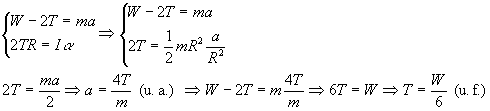
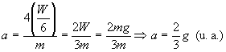
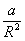
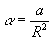

a. A tensão em cada cordão enquanto eles estão desenrolando; b. A aceleração linear do cilindro durante a queda. | 
|
Um cilindro de comprimento L e raio R tem peso W. Dois cordões são enrolados em volta do cilindro, cada qual próximo da extremidade, e suas pontas presas a ganchos fixos no teto. O cilindro é mantido horizontalmente com os dois cordões exatamente na vertical e, em seguida, é abandonado (figura abaixo). Determine:
a. A tensão em cada cordão enquanto eles estão desenrolando; b. A aceleração linear do cilindro durante a queda. |
|
a)

b)

Observações:

é a aceleração linear, além disto
 Voltar
Voltar